Bay 01AIDE v1.3在线
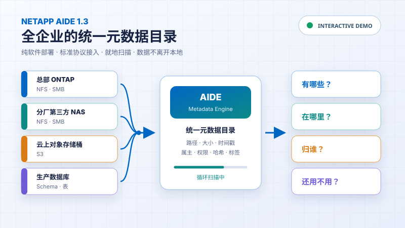
AIDE 2026 深度解析 · 制造业视角
AIDE 1.3 正式版：就地扫描 NetApp 与第三方存储，构建统一元数据目录，讲解部署、数据治理与 MCP 受控访问，并附存储盘点、智能体权限审计两个实测案例，含 6 分钟视频。
没有匹配的展位，换个关键词试试。

AIDE 1.3 正式版：就地扫描 NetApp 与第三方存储，构建统一元数据目录，讲解部署、数据治理与 MCP 受控访问，并附存储盘点、智能体权限审计两个实测案例，含 6 分钟视频。
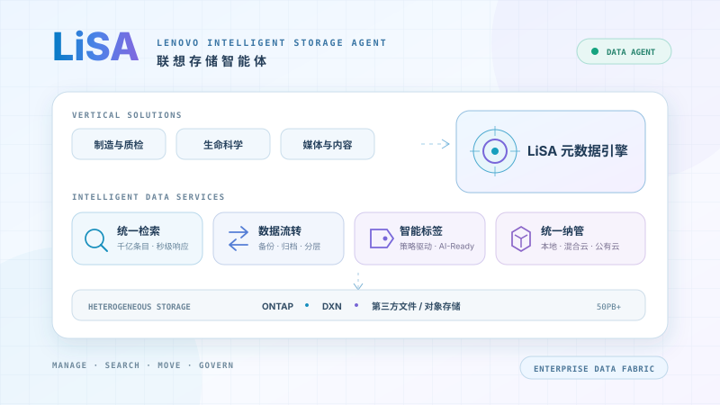
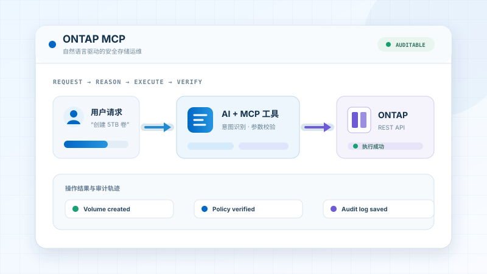
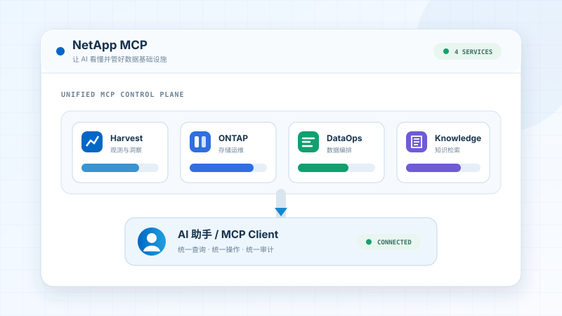
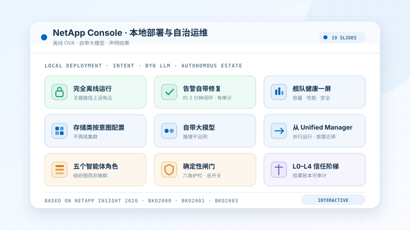
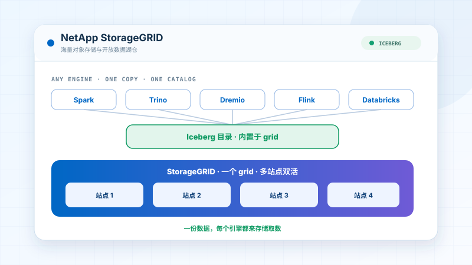
19 幕：多站点架构、ILM 与分支桶、12.1 新特性，Iceberg 与 Lakehouse Tables 让目录内置于存储，以及 Hadoop 迁移与 AI 数据管道，含 6 分钟视频。
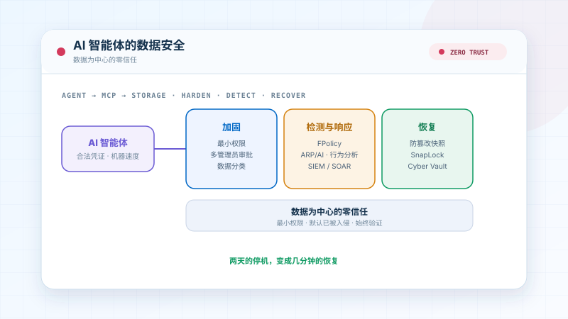
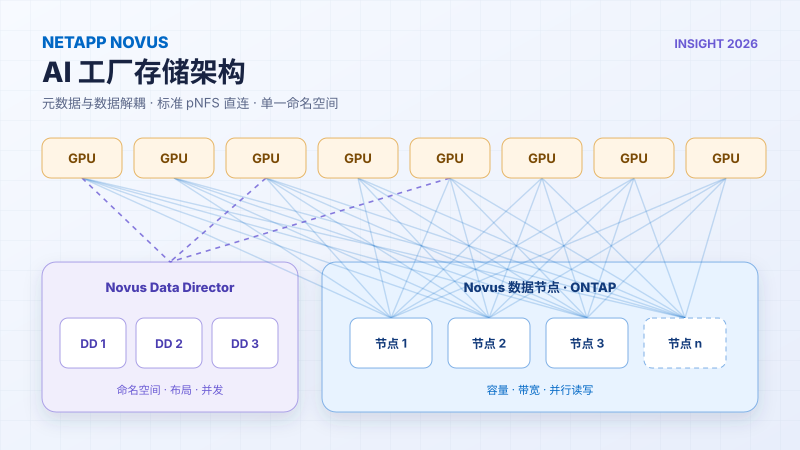
解耦式横向扩展架构：Data Director 管理命名空间，ONTAP 数据节点经 pNFS 并行直连，讲解 I/O 路径与扩展，含 5 分钟视频。
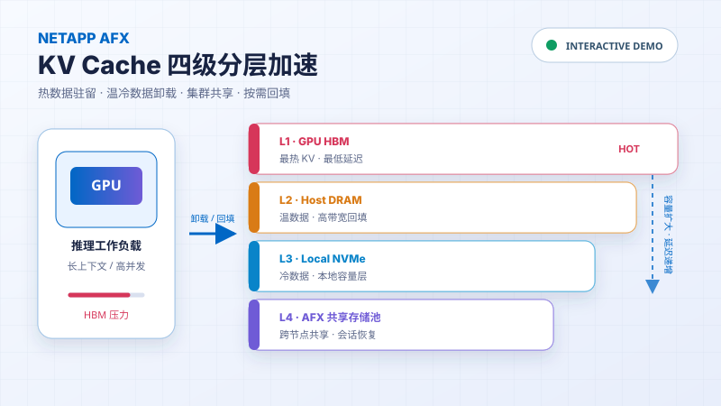
从智能体多步推理讲起，KV Cache 在 HBM、DRAM、NVMe 与 AFX 共享池间的分层、共享与命中，含 NetApp 实测数据、FAST '26 研究解读与 7 分钟视频。
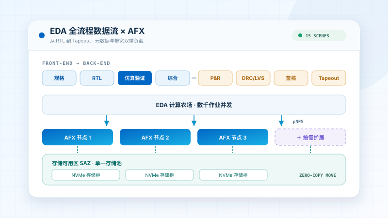
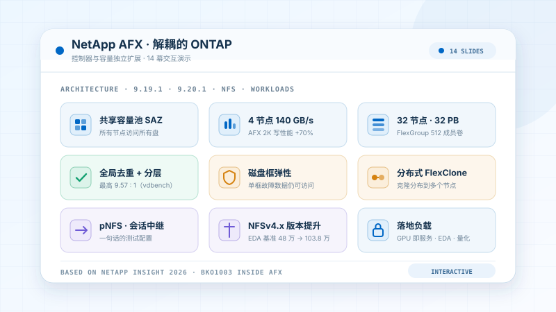
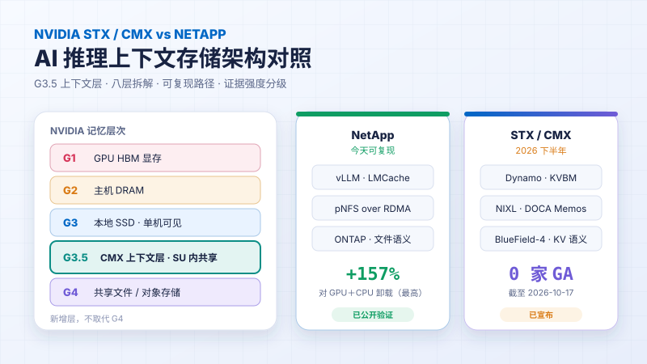
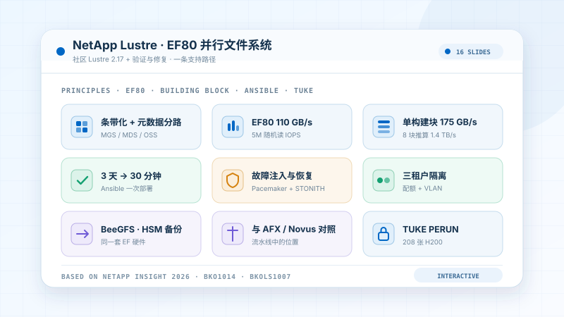
16 幕：Lustre 原理、E-Series 换代、2×2 构建块与线性扩展、Ansible 部署与故障注入、多租户、TUKE 超算案例，含 5 分钟视频。
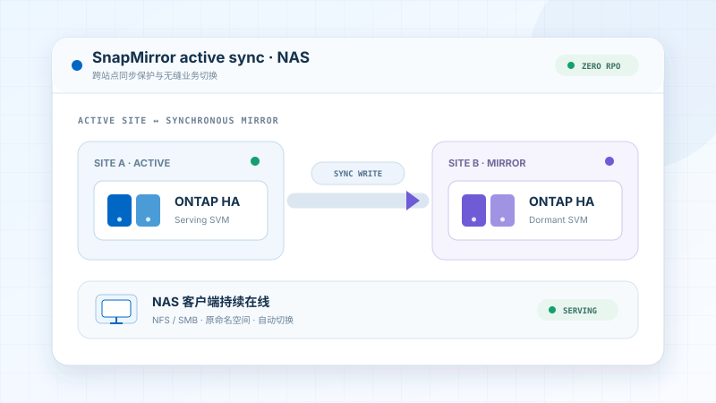
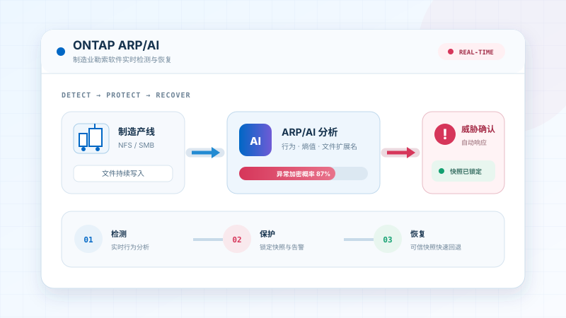
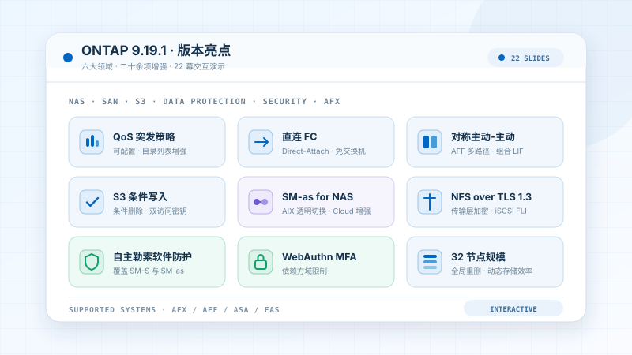
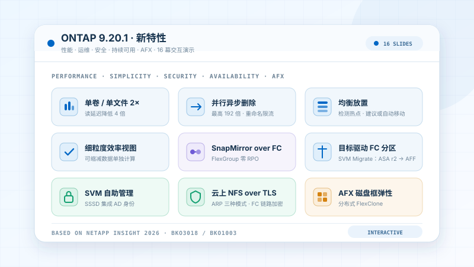
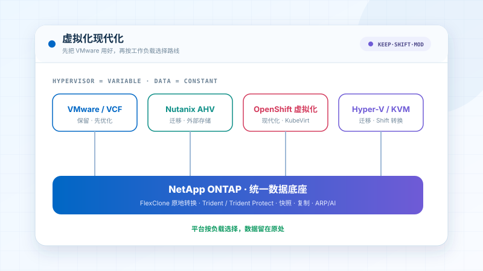
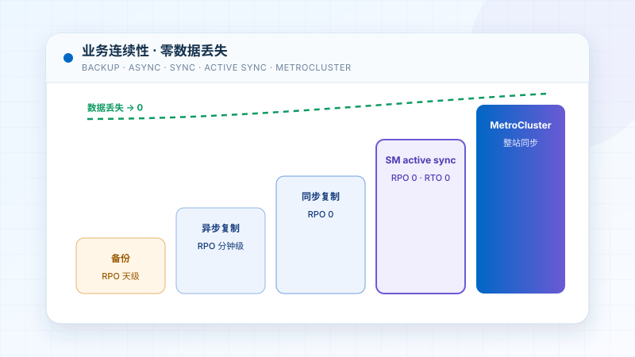
18 幕：从备份、异步容灾到 SnapMirror active sync 与 MetroCluster 双活的完整谱系，含故障注入演示、选型自检，以及云上容灾、跨云切换与耶鲁大学等客户案例，含 6 分钟视频。
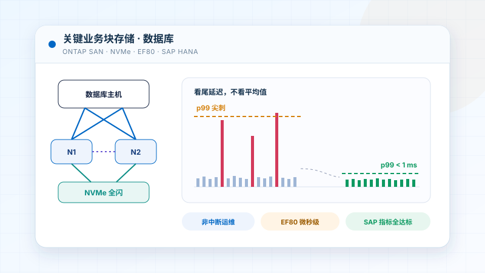
20 幕：按延迟预算选平台、上线前证明 p99、按应用边界保护与网络韧性、集群数据库与非中断运维、EF80 微秒级延迟与动态磁盘池，以及波士顿大学 SAP HANA 换代的实测结果，含 6 分钟视频。
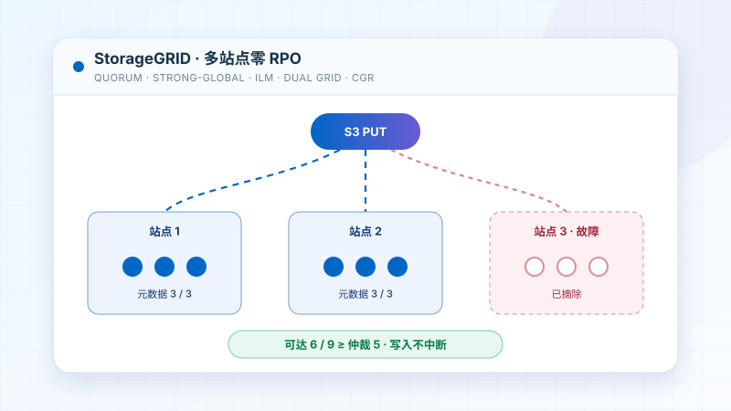
19 幕：从写入确认到站点故障与自动重同步，讲清一致性级别、元数据仲裁与 ILM 摄取行为，含仲裁滑块、纠删码容量估算、性能规划与故障场景查询，以及四地双网格部署与方案自检，含 5 分钟视频。
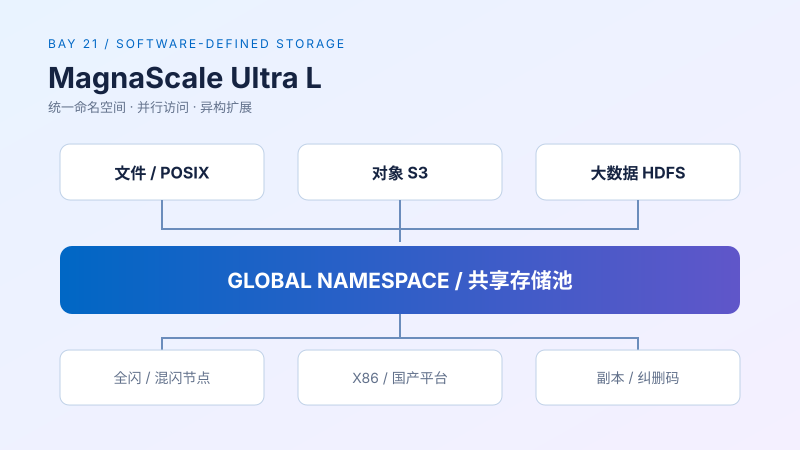
21 幕：从客户工作负载到统一命名空间、并行客户端、RDMA、NEST 小文件、字节锁与数据保护，含纠删码容量与容错交互、国产化部署、云与容器接入、产品组合选型及 PoC 清单，含 7 分钟讲解视频。